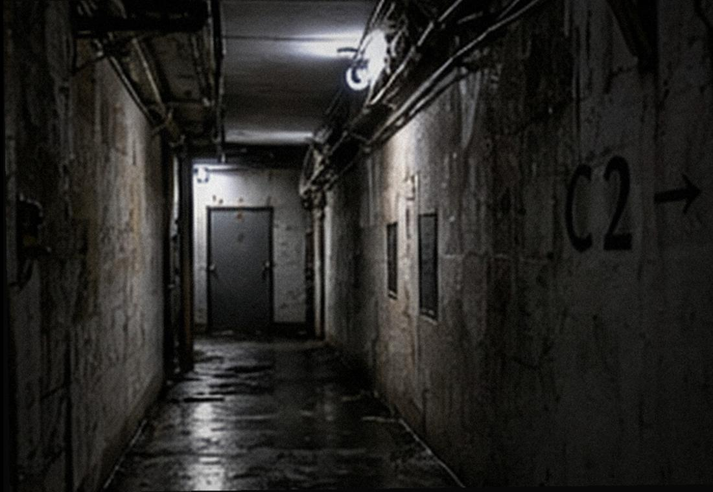

D:\FACILITY\DATA\ [只读恢复镜像]
/C-MIRROR/REPAIR
| 编号 | 报修 | 现场复核 | 状态 |
|---|---|---|---|
| WX-060611 | 后场侧门内推可开。 | 闭门器回弹不足，锁舌磨损。 | 待更换 |
| WX-060618 | 镜厅3号镜面松动。 | 背板固定件老化。 | 已完成 |
| WX-060702 | 游客出口箭头脱胶。 | 重新粘贴。 | 已完成 |
| WX-060724 | 侧门再次报修。备注：游客区拐过去就是这门，真有小孩进来麻烦。 | 临时加“员工区域”标识。 | 未完成 |
| WX-060731 | 镜厅风机噪音大。 | 皮带松。 | 已完成 |
| WX-060809 | 后门指示灯间歇失灵。 | 换灯管。 | 观察 |
| WX-060814 | 后场墙根渗水，湿度高。 | 2号排水泵偶发跳闸。 | 月底处理 |
| WX-060816 | 员工通道墙皮脱落。 | 不影响通行。 | 延期 |

PHOTO C-0614-03 / 后场通道旧维修留档。照片未覆盖全部转角。
纸质附件背面有一行高铭的笔迹：“03年那次排水改过一回。这台机子没留竣工图，只抄了索引：03 / 441 / C。”
附件目录只写着“澄海城市建设档案馆 / C区排水与检修改造”。工程组这台旧机没有图纸副本；要继续查，只能按档案馆自己的档号格式把那串索引补全。